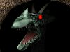
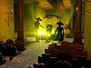
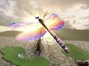
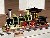

Raytracing
| 1 (224 Pts) Enlightment Farang / Nostalgia |
|
 |
2 (102 Pts) Dragon's lair Big L / New Order |
 |
3 (92 Pts) Cathedral Toudi / Prockator |
 |
4 (71 Pts) ??? Helmut / Scarface |
 |
5 (68 Pts) Museum Anomaly / Green |